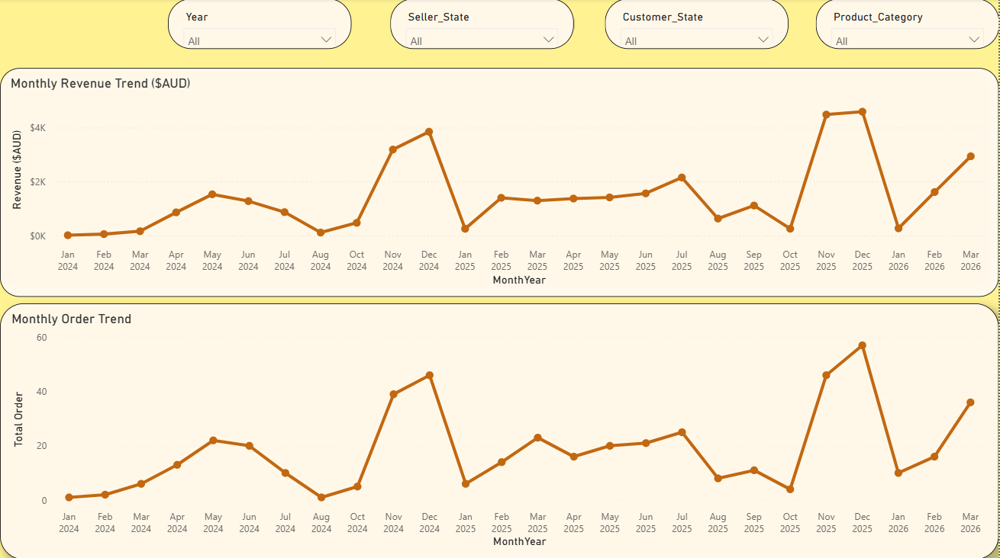
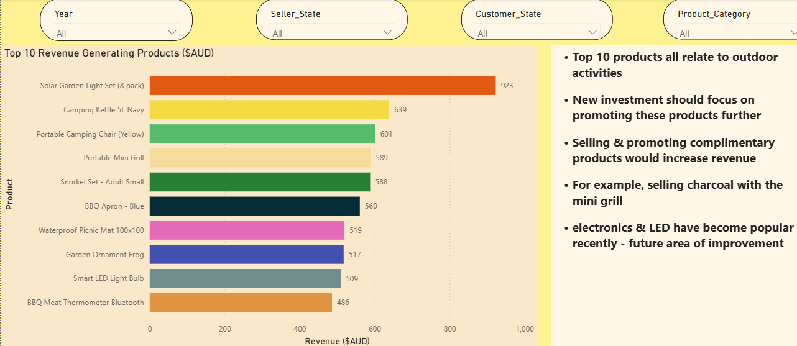
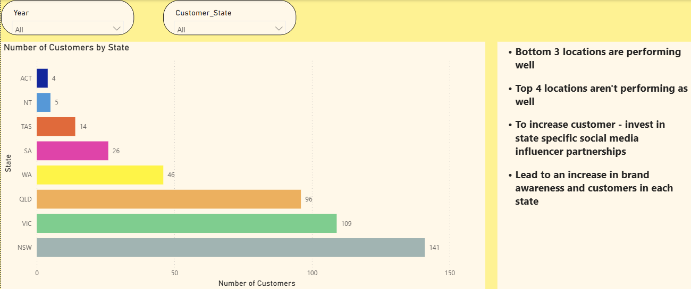
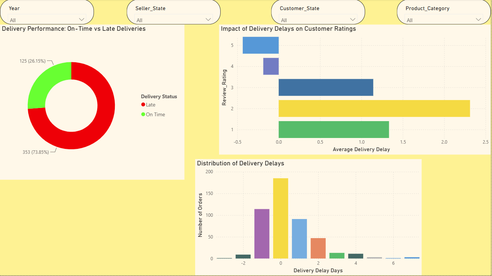

CompradaRoo is a small Australian eCommerce marketplace that connects customers with small sellers of home, outdoor, beauty, electronics and other goods. It launched in January 2024 and earns revenue by charging a 20% fee on every transaction. Having just secured a large investment, the founders planned to expand significantly over the following year. They wanted an evidence-based view of the business before they did: where the growth was, who the customers and sellers were, what drove repeat purchases and poor reviews, and where the expansion money should go. They provided six tables covering launch to the end of March 2026: products, customers, orders, order items, sellers and reviews.
The deliverable was a 15-to-20-minute presentation to a non-technical audience, followed by a Q&A, covering our tools and approach, our handling of the client's data, our insights and our recommendations for the next twelve months. The project came in the final week of an eight-week bootcamp, with three days to complete it and every team member required to present and be marked individually. My task was twofold: help answer the client's questions and lead a team of 4 people with very different strengths so that the answer we produced was one nobody could have produced alone.
Three days set the boundary on everything. The brief suggested four areas of investigation: sales trends, customers, orders and sellers, and we chose questions inside each that the data could actually answer in the time: how orders and revenue had moved over 27 months, where customers and sellers were based, which customers came back, how accurate delivery estimates were, and what sat behind low review scores. The dataset was small enough to know well: 478 orders from 441 customer accounts, 95 sellers, 462 products and 216 reviews, but it had limits we had to respect.
The products table carried current prices only, so revenue by product or category was an estimate, and the order totals were our source of truth. The sellers table listed only sellers still on the platform at the end of Q1 2026, so we could not analyse seller churn. Reviews covered 45% of orders. Forecasting, statistical modelling and anything about marketing channels, which the data did not contain, were out of scope. Because the customer and seller tables held names and email addresses, we also scoped how we would handle the data before we touched it.
The work had three audiences, and leading the team meant keeping all three in view.
The client: CompradaRoo's founders and their investors are not analysts. They wanted to know where to put expansion money, in plain language, with charts they could read at a glance and recommendations they could act on.
The assessors: Each of us was marked individually on presentation and collectively on collaboration. They wanted to see a sound method, the privacy steps we took, and evidence that everyone had contributed, not one or two people carrying the group.
The team: 4 analysts including me, with different backgrounds: some most at home in Excel, some in Power BI, some who wanted to write the narrative and speaker notes, and some who were not confident presenting. Each person needed a role that used their strengths and a fair chance to do well on the day, and that was my primary responsibility.
On day one we read the brief together, and before anyone opened a file, every member put forward the questions they would ask of the data. We mapped those onto the brief's four areas and prioritised them into a shortlist we could answer in three days, which meant some good ideas were parked, with reasons. We then mapped the six tables and the keys that joined them, so the whole team was working from one picture of the data. I assigned roles by strength and preference: cleaning and validation in Excel (a stray value in an unnamed column, four orders with no items, order totals that did not match current prices, date parsing), the data model and dashboards in Power BI, and the slide template, narrative and speaker notes.
My own role was coordination: the timeline, the check-ins, and a single findings sheet where every figure lived so that the slides, the notes and the dashboards all quoted the same numbers. For privacy, we agreed up front to work on copies with names and email addresses removed, keep the files in the shared workspace, and put no personal data on a slide.
Day two was analysis, with a short check-in each morning and afternoon where each stream reported what it had found and what it was stuck on, and where ideas from one stream fed another. The Power BI report ended up as four linked pages: the relationship between product price and revenue, the top ten products by revenue, customers by state and the top ten returning customers, with the same four slicers on every page (year, seller state, customer state and product category) so a presenter could answer "what about Victoria?" live in the Q&A.

Day three was rehearsal and delivery. Each member presented the section they had built, because it is easier to speak about your own work, and the least confident presenters took the most concrete, chart-led sections. We ran the presentation against the clock, tightened it, and prepared a one-page Q&A sheet of what we had done, what we had not done and why.
The business was growing fast and seasonally. Orders rose 52%, and revenue rose 65% from 2024 to 2025, and Q1 2026 was up 44% in orders and 63% in revenue on the same quarter a year earlier. The fourth quarter was the peak in both years, with more than 40% of each year's orders, so any expansion plan has a Christmas deadline built into it. Across the 27 months, the platform processed about AUD 37,800 of orders, which at a 20% fee is roughly AUD 7,600 of income, a useful reminder of how small the base still was.
Customers were loyal but under-activated. Repeat buyers placed 83% of all orders, and 141 of the 220 customers who had ever bought had bought more than once, yet half of all accounts, 221 of 441, had never placed an order at all. New South Wales, Victoria and Queensland accounted for 81% of revenue. The supply side did not line up with that demand: New South Wales had 32% of customers but only 10% of sellers, while Tasmania and the Northern Territory had 26 sellers between them for 19 customers. The top ten sellers took 42% of estimated revenue, 129 of the 462 listed products had never sold, and outdoor products alone made up around 40% of both items and revenue.

The clearest finding was about delivery. 353 of the 478 orders, 74%, arrived after the estimated date, though 96% were within three days of it. Where it mattered was in the reviews: orders delivered on time averaged 4.6 stars and late orders 2.4, every one of the 44 one- and two-star reviews was for a late delivery, and only 7% of four- and five-star reviews were. Delivery was also the most-cited reason in the survey. Late deliveries were not just a logistics cost; they were the main thing generating bad reviews.

Our recommendations followed from those findings: recruit sellers where the customers are, in New South Wales first; fix delivery estimates and shipping-centre bundling before scaling volume, since lateness is what drives poor reviews; run a reactivation campaign for the 221 dormant accounts and a loyalty offer for the repeat core; and build the year's marketing and stock planning around the fourth-quarter peak and the outdoor category. We delivered the presentation within the time limit, every member presented a section, and we took the Q&A as a group.
Assigning roles by strength got the work done, but it was the shared findings sheet that turned 4 pieces of work into one presentation; someone has to own the numbers, and if nobody does, the slides and the dashboards drift apart. The round of questions on day one was worth the hour it cost, because some of what we ended up presenting came from people who would not have pushed their idea forward without being asked, and the delivery finding was the kind of thing that only surfaces when the person who noticed it feels heard. Confidence in presenting is built by rehearsal and by giving people the section they built, not by telling them they will be fine. On the data side, the lesson was to read the data dictionary sceptically: the "prices" were current, not historical; the sellers table had survivorship built into it, and a stray value in an unnamed column was a reminder to look at every column before trusting a file.
Given more time, I would analyse delivery lateness by seller and by shipping centre, since fixing it depends on knowing where it originates; run a cohort analysis on the repeat customers to see what their first order had in common; and build a simple forecast for the fourth quarter of 2026 under the expansion plan. Those are the questions the investors would ask next.